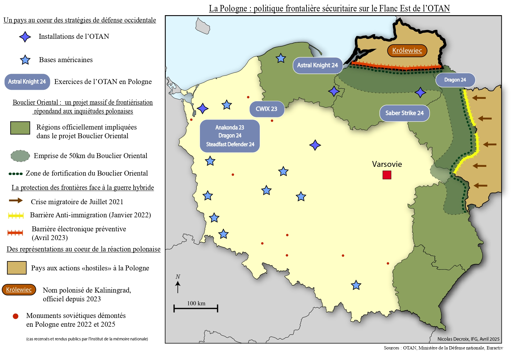
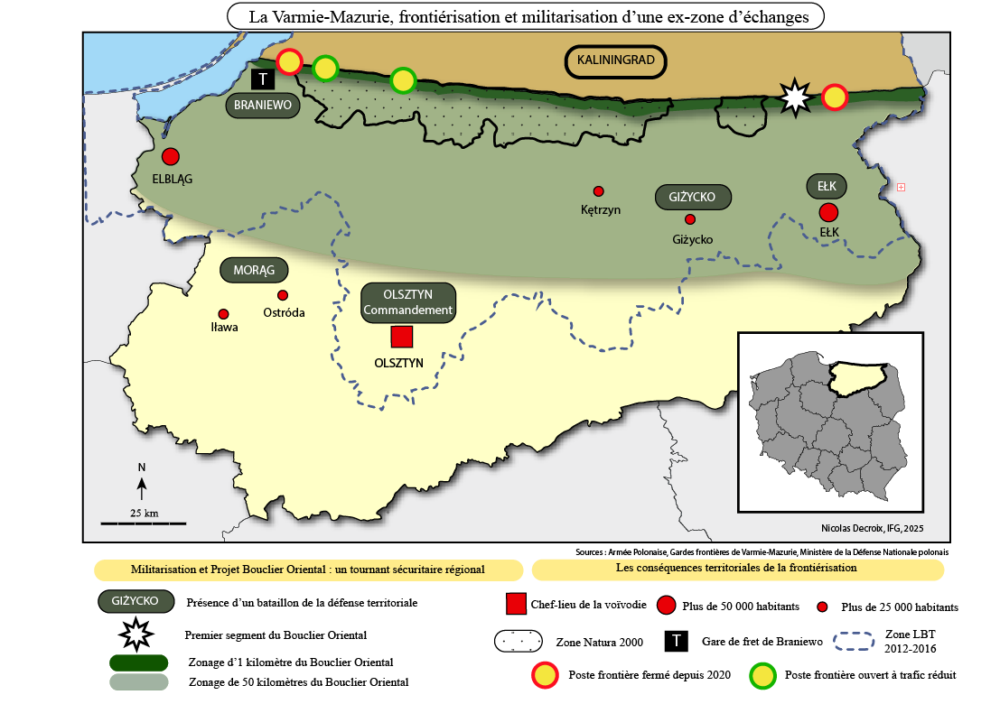

Nicolas Decroix
Analyse Géopolitique | Spécialisation Sécurité et Défense
Étudiant en Master à l'Institut Français de Géopolitique, je me spécialise dans la sécurité de l'espace OTAN. Mon expertise porte sur la militarisation du Flanc Est, l'intégration de l'Europe du Nord dans l'alliance et la sécurité en zone arctique.
Expériences Professionnelles
Student Assistant to the Secretary General
European Reform Universities Alliance (ERUA) - Paris-VIII
- Rapports analytiques de documents européens sur l’éducation pour la secrétaire générale.
- Création de présentations et d’ateliers de comité de pilotage.
- Analyse d’assurance qualité et d’impact de l’alliance.
- Organisation et vérification de conformité sur les bases de données collaboratives de l’alliance.
- Réunions et productions réalisées intégralement en anglais à destination des partenaires européens.
- Veille sur les évènements européens du secteur de l’éducation
Stagiaire Recherche
CNRS - Programme 13-Novembre & Équipex MATRICE
- Transcription de témoignages de victimes des attentats de 2015 en France (programme 13-Novembre) et de déportés français (MATRICE) .
- Suivi du vade-mecum de transcription.
- Respect des protocoles et de la clause de confidentialité.
Stagiaire au service Urbanisme
Mairie de Caluire-et-Cuire, France
- Étude de faisabilité pour l'implantation de modes de production d'énergie solaire à l'échelle communale.
- Rédaction de notes de synthèse et de rapports d'analyse à destination de Monsieur le Maire.
- Utilisation opérationnelle des systèmes d'information géographique (ArcGIS, QGIS).
Cursus Académique
Master de Géopolitique - Spécialisation Nouveaux Acteurs
Institut Français de Géopolitique (IFG) - Université Paris-VIII
Master 1 : Mémoire sur la militarisation de la frontière russo-polonaise (17/20).
Double Licence Histoire & Géographie
Université Jean Moulin Lyon-III | Mention Bien aux deux licences
Recherches en cours
Mémoire de Master 2 (En préparation)
"La sécuritisation de l'Arctique finlandais : d'un espace périphérique à un espace stratégique"
Terrain de recherche : mai-juin 2026
Analyse de l'évolution des infrastructures militaires et de la posture de défense finlandaise dans l'Arctique suite à l'adhésion à l'OTAN.
Travaux de Recherche Terminés
Mémoire de Master 1 (17/20)
"La Pologne et l'exclave de Kaliningrad : Projet Bouclier Oriental et nouvelles réalités frontalières"
Ce travail documente une visite scientifique à l'Université d'Olsztyn (Pologne), et détaille mes échanges directs avec les chercheurs locaux.
Article de terrain ↗


Publications & Engagements
Université de Varsovie
Office pour la Culture Français
Présentation d'ouvrages lors de séminaires de lecture scientifique (Août 2025).
Association Géodote
Institut Français de Géopolitique
Chargé des partenariats et relations extérieures (2025-2026).
Encyclopédie "666 Albums"
Éditions du Nouveau Monde
Rédaction d'une chronique d'album dans l'encyclopédie musicale.
Lien ↗